library(tidyverse)
library(modelr)
library(broom)
library(readr)
Advertising <- read_csv("Advertising.csv") %>% select(-X1)Ejemplo resulto - Certamen #1
Introducción
En lo que sigue, se desarrolla en detalle una pregunta tipo certamen #1, con el fin de entregarles una idea de cómo será la primera evaluación. Se desarrolló en R sin embargo, todo lo expuesto puede ser realizado en Python análogamente. Adicionalmente al tipo de preguntas como la desarollada en este documento, preguntas teóricas y conceptuales podrán también ser incorporadas.
Pregunta tipo prueba
Publicidad El conjunto de datos Advertising consiste en las ventas (sales) en miles de unidades de un producto en 200 mercados diferentes, junto con los presupuestos en dólares de publicidad en cada uno de estos mercados para tres medios diferentes: televisión (TV), radio y periódicos (newspaper).
- Realice un análisis exploratorio del conjunto de datos
Advertising.
Cargamos algunos paquetes que serán útiles para el análisis, luego leémos el conjunto de datos y descartamos la primera columna (por ser una columna que no nos entrega información). Adicionalmente, imprimimos parte de los datos para verificar que están siendo correctamente ingresados.
head(Advertising)# A tibble: 6 x 4
TV radio newspaper sales
<dbl> <dbl> <dbl> <dbl>
1 230. 37.8 69.2 22.1
2 44.5 39.3 45.1 10.4
3 17.2 45.9 69.3 9.3
4 152. 41.3 58.5 18.5
5 181. 10.8 58.4 12.9
6 8.7 48.9 75 7.2Para realizar el análisis exploratorio de datos (EDA por sus siglas en inglés), existen varias formas de abarcar el problema. Una manera sencilla aunque sólo preliminar para realizar un EDA sistemático a un conjunto de datos, es usar el paquete DataExplorer
library(DataExplorer)
plot_intro(Advertising)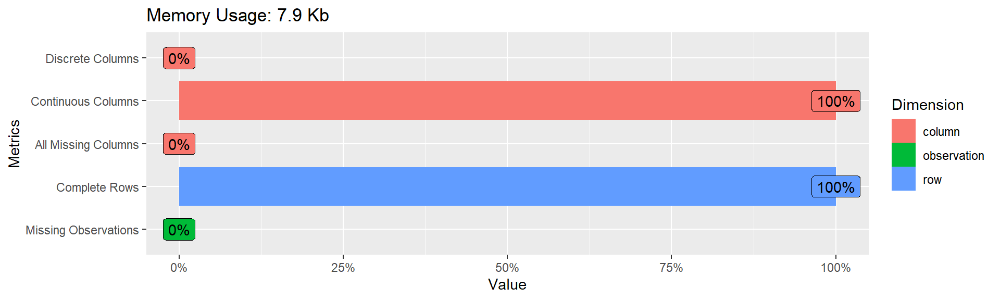
La función plot_intro() nos entrega el tipo de variables en las columnas y el porcentaje de datos faltantes. Alternativamente, se puede obtener la misma información en formato de tabla usando introduce().
En el caso que existan datos faltantes a lo largo del conjunto de datos en distintas variables, es posible obtener el detalle del porcentaje de estos utilizando la función plot_missing(). El paquete DataExplorer entrega además sugerencias sobre la calidad de las variables conforme el nivel de datos faltantes presentes, sin embargo, la eliminación de columnas debe ser estudiada cuidadosamente y siempre dependerá del contexto del problema.
En el caso de que existan datos discretos, es posible visualizar la distribución de frecuencias para todas estas variables utilizando la función plot_bar(). De manera similar, es posible obtener los histogramas para las variables continuas utilizando la función plot_histogram():
plot_histogram(Advertising)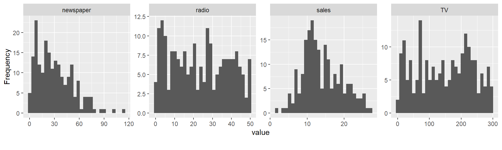
plot_density(Advertising)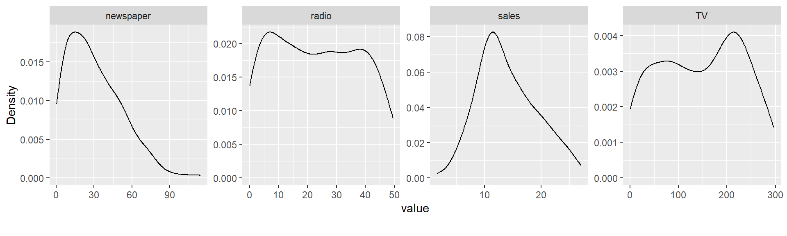
La primera función nos entrega los histogramas hechos sistemáticamente usando el paquete ggplot2, mientras que el segundo realiza una estimación de densidad por kernel, que vendría siendo algo así como una versión suavizada del histograma. Esta técnica tomará relevancia más adelante en el curso.
Para comparar visualmente la distribución de las variables en estudio con distribuciones teóricas conocidas, es posible utilizar QQ-plot mediante la función plot_qq().
plot_qq(Advertising)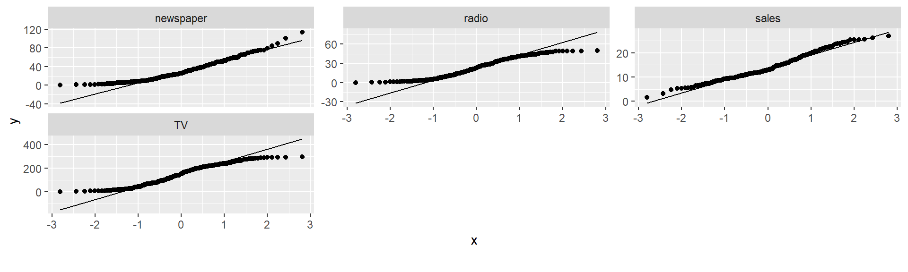
Por defecto, el comando plot_qq() compara con una distribución normal, por lo que es una buena herramienta visual para el análisis de residuos bajo un modelo lineal. Adicionalmente, es posible agrupar las variables continuas graficadas por factores o variables categóricas mediante el argumento plot_qq(... , by="").
Para realizar un análisis correlacional de las variables en estudio, es posible utilizar la función plot_correlation()
plot_correlation(Advertising)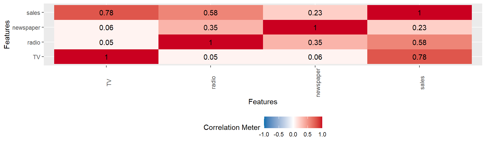
Para realizar un análisis de componentes principales (que veremos más adelante en detalle) se puede utilizar la función plot_prcomp(). Omitiremos estos gráficos por el momento.
Hay que ser particularmente cuidadoso en la interpretación de este análisis, pues se debe tener claro que tipo de correlación se está calculando (y graficando). Este comando utiliza la función cor(). Es posible, realizar este análisis para los dos tipos de variables: discretos y continuos. Se recomienda tratar los datos faltantes antes de realizar este proceso.
Como recordarán de cursos anteriores, uno de los mejores gráficos disponibles es el boxplot que puede ser calculado fácilmente utilizando la función plot_boxplot(..., by="") si deseamos agrupar por alguna variable categórica. Para ver cada uno de manera univariada usamos la siguiente función.
p <- ggplot(Advertising, aes(TV)) + geom_boxplot()
p 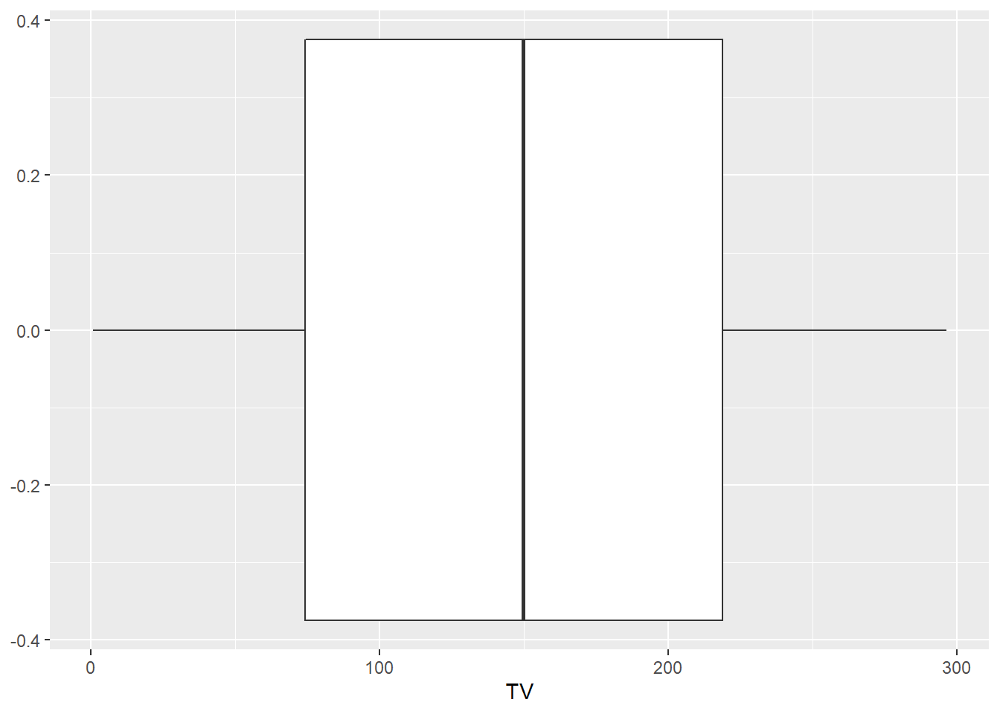
Este tipo de gráficos toma más relevancia cuando podemos analizar una misma variable agrupada por una categórica, como veremos más adelante.
También es posible obtener los gráficos de dispersión de cada una de las variables en estudio mediante la función plot_scatterplot(... ,by="") agrupada por una variable categórica.
Finalmente, cabe mencionar que los estadísticos descriptivos (media, varianza, cuartiles, etc) también son parte del EDA. Todo el proceso anterior puede ser en su totalidad automatizado con el comando create_report(), este creo un archivo .html con las funciones que puede hacer con el conjunto de datos, sin embargo, hay que tomar atención a lo que hace en cada uno de los pasos pues es sólo un proceso sistematizado con parámetros por defecto. Se recomienda realizar cada paso por separado.
En este ejemplo introductorio, al no tener datos faltantes y categóricos, el EDA es bastante sencillo y se reduce a la creación de gráficos básicos y estadística descriptiva.
- Realice un ajuste lineal simple para las ventas (
sales) medidas en miles de unidades vs cada uno de los tres medios utilizados. Explicite los ajustes realizados.
p1<- ggplot(data = Advertising, mapping = aes(x = TV, y = sales)) +
geom_point() + geom_smooth(method = "lm", se = FALSE)
p2<- ggplot(data = Advertising, mapping = aes(x = radio, y = sales)) +
geom_point() + geom_smooth(method = "lm", se = FALSE)
p3<- ggplot(data = Advertising, mapping = aes(x = newspaper, y = sales)) +
geom_point() + geom_smooth(method = "lm", se = FALSE)La creación de gráficos utilizando ggplot2 funciona de manera modular, primero se establece el conjunto de datos a utilizar, y se especifica que variables serán los ejes (ggplot()). Luego, se grafican los puntos (geom_point()) y finalmente la recta geom_smooth(), respectivamente.
library(gridExtra)
grid.arrange(p1, p2, p3, nrow = 1)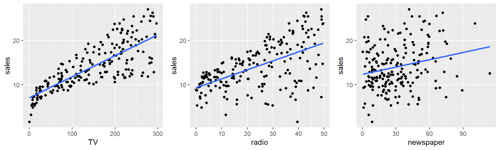
Los modelos de regresión ajustados tienen la forma:
\[Y=\beta_0+\beta_1 X +\epsilon\]
donde:
- \(Y\) representa las ventas en miles de unidades
- \(X\) representa el presupuesto en cada uno de los medios, respectivamente.
- \(\beta_0\) es el intercepto
- \(\beta_1\) es la pendiente, que representa la relación lineal
- \(\epsilon\) es el término de error aleatorio con media cero.
Para analizar el detalle de nuestro ajusto lineal, guardamos los modelos lineales en tres objetivos distintos:
El comando lm viene de linear models y existen versiones más generales y específicas dentro de R
modelo_1<-lm(sales ~ TV, data=Advertising)
modelo_2<-lm(sales ~ radio, data=Advertising)
modelo_3<-lm(sales ~ newspaper, data=Advertising)La función lm() utiliza por defecto el método de mínimos cuadrados para estimar los coeficientes de regresión, pero es posible definir otras metodologías utilizando la función glm().
Los ajustos especificos obtenidos (con sus estimaciones de los parámetros) los podemos obtener simplemente haciendo un summary() a los modelos calculados.
# Sales vs TV
summary(modelo_1)
Call:
lm(formula = sales ~ TV, data = Advertising)
Residuals:
Min 1Q Median 3Q Max
-8.3860 -1.9545 -0.1913 2.0671 7.2124
Coefficients:
Estimate Std. Error t value Pr(>|t|)
(Intercept) 7.032594 0.457843 15.36 <2e-16 ***
TV 0.047537 0.002691 17.67 <2e-16 ***
---
Signif. codes: 0 '***' 0.001 '**' 0.01 '*' 0.05 '.' 0.1 ' ' 1
Residual standard error: 3.259 on 198 degrees of freedom
Multiple R-squared: 0.6119, Adjusted R-squared: 0.6099
F-statistic: 312.1 on 1 and 198 DF, p-value: < 2.2e-16# Sales vs radio
summary(modelo_2)
Call:
lm(formula = sales ~ radio, data = Advertising)
Residuals:
Min 1Q Median 3Q Max
-15.7305 -2.1324 0.7707 2.7775 8.1810
Coefficients:
Estimate Std. Error t value Pr(>|t|)
(Intercept) 9.31164 0.56290 16.542 <2e-16 ***
radio 0.20250 0.02041 9.921 <2e-16 ***
---
Signif. codes: 0 '***' 0.001 '**' 0.01 '*' 0.05 '.' 0.1 ' ' 1
Residual standard error: 4.275 on 198 degrees of freedom
Multiple R-squared: 0.332, Adjusted R-squared: 0.3287
F-statistic: 98.42 on 1 and 198 DF, p-value: < 2.2e-16# Sales vs newspaper
summary(modelo_3)
Call:
lm(formula = sales ~ newspaper, data = Advertising)
Residuals:
Min 1Q Median 3Q Max
-11.2272 -3.3873 -0.8392 3.5059 12.7751
Coefficients:
Estimate Std. Error t value Pr(>|t|)
(Intercept) 12.35141 0.62142 19.88 < 2e-16 ***
newspaper 0.05469 0.01658 3.30 0.00115 **
---
Signif. codes: 0 '***' 0.001 '**' 0.01 '*' 0.05 '.' 0.1 ' ' 1
Residual standard error: 5.092 on 198 degrees of freedom
Multiple R-squared: 0.05212, Adjusted R-squared: 0.04733
F-statistic: 10.89 on 1 and 198 DF, p-value: 0.001148- ¿Qué modelo ajustado es mejor? Comente e interprete los resultados de este modelo.
Es claro notar que el modelo que mejor se ajusta es el primero, las ventas (sales) vs TV, lo cual era esperable desde la figura exploratoria. El modelo ajustado corresponde a:
\[Y=7.032594+0.047537 X + \epsilon\]
En otras palabras, nuestra estimación del intercepto es 7.032594, por lo que cuando el presupuesto para el medio televisivo es cero, esperaremos ventas de 7032 unidades, y por cada $1000 dólares adicionales en el presupuesto esperaremos un incremento promedio en las ventas de 47 unidades. Además, es claro notar que ambos coeficientes son** estadísticamente significativos**, y podemos calcular sus intervalos de confianza como:
confint(modelo_1) 2.5 % 97.5 %
(Intercept) 6.12971927 7.93546783
TV 0.04223072 0.05284256Debido a que el cero no está incluido en el intervalo de confianza para el coeficiente de pendiente, podemos concluir que por cada $1000 dólares adicionales de presupuesto en el medio televisivo, esperaremos un incremento promedio en las ventas entre 42 y 52 unidades.
Para justificar en detalle, podemos el R^2 del modelo_1 es el mayor entre los realizados, y podemos realizar una tabla anova para verificar que mediante el test F, los coeficientes no son nulos:
anova(modelo_1)Analysis of Variance Table
Response: sales
Df Sum Sq Mean Sq F value Pr(>F)
TV 1 3314.6 3314.6 312.14 < 2.2e-16 ***
Residuals 198 2102.5 10.6
---
Signif. codes: 0 '***' 0.001 '**' 0.01 '*' 0.05 '.' 0.1 ' ' 1Por lo que, de ser viable nuestro modelo realizado, esto es, que cumpla con los supuestos de una regresión lineal, sería el modelo más adecuado entre los realizados. Para ello, primero visualizamos -nuevamente-:
ggplot(Advertising, aes(TV, sales)) +
geom_point() +
geom_smooth(method = "lm") +
geom_smooth(se = FALSE, color = "red")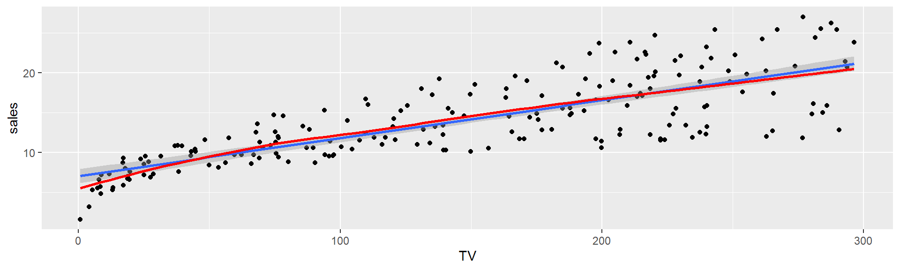
Para ver el análisis de residuos, es posible utilizar el comando plot(modelo_1) el cual entregará 4 gráficos en formato básico. En lo que sigue, los creamos uno por uno utilizando el paquete ggplot2.
ggplot(modelo_1, aes(.fitted, .resid)) +
geom_ref_line(h = 0) +
geom_point() +
geom_smooth(se = FALSE) +
ggtitle("Residuos vs Ajuste")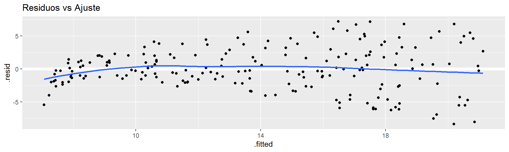
Una forma de visualizar más claramente los residuos, es estandarizándolos y reescalándolos, respectivamente.
modelo_1_res <- augment(modelo_1, Advertising)
p4 <- ggplot(modelo_1_res, aes(.fitted, .std.resid)) +
geom_ref_line(h = 0) +
geom_point() +
geom_smooth(se = FALSE) +
ggtitle("Residuos Estadarizados vs Ajuste")
p5 <- ggplot(modelo_1_res, aes(.fitted, sqrt(.std.resid))) +
geom_ref_line(h = 0) +
geom_point() +
geom_smooth(se = FALSE) +
ggtitle("Reescalamiento")
gridExtra::grid.arrange(p4, p5, nrow = 1)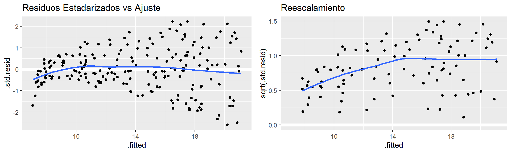
En el primer gráfico podemos identificar fácilmente cuando un residuo se desvía por varias desviaciones estándar, en donde usualmente estamos en busca de los residuos que difieren por más de 3 desviaciones estándar. El segundo gráfico muestra si los residuos están dispersos equitativamente a lo largo del rango de los predictores. Luego, como hemos asumido normalidad en los errores, debemos realizar un QQ plot
qq_plot <- qqnorm(modelo_1_res$.resid)
qq_plot <- qqline(modelo_1_res$.resid)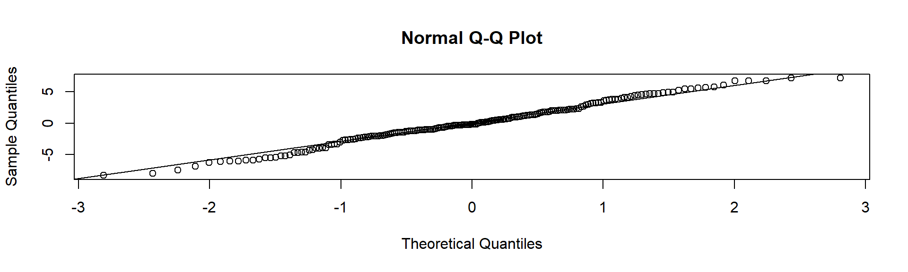
Como lo cuantiles esperados se asemejan a los teóricos, podemos asumir normalidad.
Siguiendo, si deseamos encontrar datos u observaciones anómales podemos calculos las distancias de cook de las observaciones y graficar los apalancamientos.
par(mfrow=c(1, 2))
plot(modelo_1, which = 4, id.n = 5)
plot(modelo_1, which = 5, id.n = 5)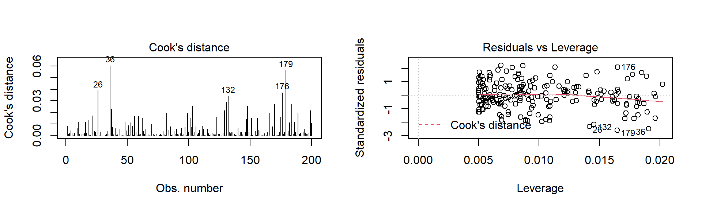
En el gráfico anterior, buscamos las observaciones que tienen mayor distancia de cook, y estas serán sospechosas de ser outliers, siendo esta sospecha reforzada si su apalancamiento está muy a la derecha en el gráfico respectivo. Para extraer las n observaciones con mayor distancia de cook, podemos escribir:
modelo_1_res %>%
top_n(3, wt = .cooksd)# A tibble: 3 x 10
TV radio newspaper sales .fitted .resid .hat .sigma .cooksd .std.resid
<dbl> <dbl> <dbl> <dbl> <dbl> <dbl> <dbl> <dbl> <dbl> <dbl>
1 263. 3.5 19.5 12 19.5 -7.53 0.0142 3.22 0.0389 -2.33
2 291. 4.1 8.5 12.8 20.9 -8.05 0.0191 3.22 0.0605 -2.49
3 277. 2.3 23.7 11.8 20.2 -8.39 0.0165 3.21 0.0563 -2.59Conforme lo anterior, se cumplen todos los supuestos del modelo de regresión lineal simple, por lo que la regresión ajustada es la mejor entre las realizadas.
- Ajustar mediante un ajuste de regresión múltiple las ventas en miles de unidades (
sales), sin incorporar interacciones. Interprete los resultados.
De manera similar, podemos realizar un ajuste de regresión múltiple utilizando los presupuestos en los distintos medios de manera conjunta:
modelo_4<-lm(sales ~ TV + radio + newspaper, data= Advertising)
summary(modelo_4)
Call:
lm(formula = sales ~ TV + radio + newspaper, data = Advertising)
Residuals:
Min 1Q Median 3Q Max
-8.8277 -0.8908 0.2418 1.1893 2.8292
Coefficients:
Estimate Std. Error t value Pr(>|t|)
(Intercept) 2.938889 0.311908 9.422 <2e-16 ***
TV 0.045765 0.001395 32.809 <2e-16 ***
radio 0.188530 0.008611 21.893 <2e-16 ***
newspaper -0.001037 0.005871 -0.177 0.86
---
Signif. codes: 0 '***' 0.001 '**' 0.01 '*' 0.05 '.' 0.1 ' ' 1
Residual standard error: 1.686 on 196 degrees of freedom
Multiple R-squared: 0.8972, Adjusted R-squared: 0.8956
F-statistic: 570.3 on 3 and 196 DF, p-value: < 2.2e-16La interpretación de los coeficientes de regresión es similar a caso de la regresión simple. Primero, notamos que los coeficientes asociados a los presupuestos en televisión y radio son significativos bajo un test de hipótesis t (p-valor \(< 0.05\)), mientras que el coeficiente asociado al presupuesto en periódicos no lo es. Por lo que, bajo un modelo de regresión múltiple, cambios en el presupuesto en periódicos no pareciera tener una relación con los cambios en las ventas. Sin embargo, en el caso del presupuesto televisivo, si este aumenta en $1000 dólares y se mantienen los otros predictores constantes, esperaríamos un incremento de 45 unidades en las ventas, en promedio. Análogamente, para un aumento de igual monto en el presupuesto radial, se esperaría un aumento de 188 unidades en promedio.
- Investigue la viabilidad del modelo de regresión múltiple y compare los resultados con el mejor modelo de regresión lineal simple. Obtenga intervalos de confianza para los parámetros de la regresión.
De manera similar al caso de regresión lineal simple, podemos calcular intervalos de confianza para los parámetros de regresión como:
confint(modelo_4) 2.5 % 97.5 %
(Intercept) 2.32376228 3.55401646
TV 0.04301371 0.04851558
radio 0.17154745 0.20551259
newspaper -0.01261595 0.01054097Luego, podemos hacemos un análisis de residuos:
modelo_1_res <- modelo_1_res %>%
mutate(Model = "Modelo de regresión lineal simple")
modelo_4_res <- augment(modelo_4, Advertising) %>%
mutate(Model = "Modelo de regresión lineal múltiple") %>%
rbind(modelo_1_res)
ggplot(modelo_4_res, aes(.fitted, .resid)) +
geom_ref_line(h = 0) +
geom_point() +
geom_smooth(se = FALSE) +
facet_wrap(~ Model) +
ggtitle("Residuos vs Ajuste")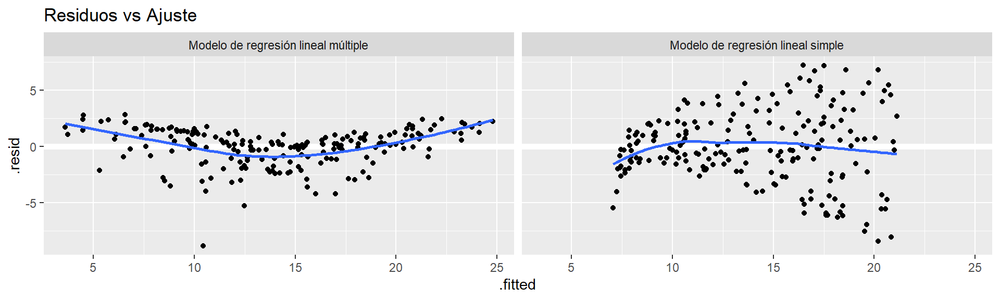
Como vemos, la variabilidad de los residuos pareciera ser más constante en el modelo de regresión lineal simple, por lo que sugiere que los supuestos sobre la varianza se cumple. Comparamos los QQ-plot:
par(mfrow=c(1, 2))
# Izquierda: Modelo de regresión lineal simple
qqnorm(modelo_1_res$.resid); qqline(modelo_1_res$.resid)
# Derecha: Modelo de regresión lineal múltiple
qqnorm(modelo_4_res$.resid); qqline(modelo_4_res$.resid)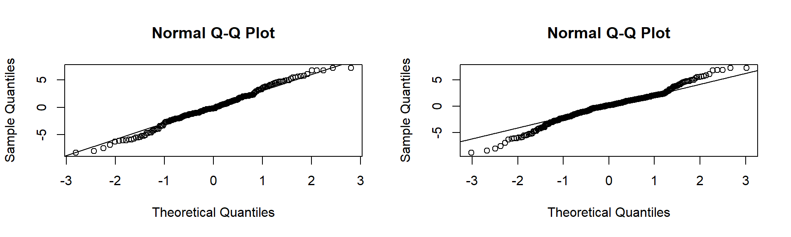
Sin embargo, en el caso de los supuestos distribucionales, lo contrario pareciera suceder. El modelo de regresión lineal múltiple pareciera tener colas de distribución más pesadas que una distribución normal, por lo que el supuesto de normalidad de los errores podría no estar cumpliéndose.
Luego, podemos comparar las medidas de desempeño de ambos modelos de la forma:
El paquete stargazer es útil para exportar los resultados de modelos estadísticos de manera tabulada a LaTeX y otros formatos.
library(stargazer)
stargazer(modelo_1,modelo_4, type="latex", header = FALSE)Como vemos, el modelo de regresión múltiple aumenta considerablemente nuestros \(R^2\) y \(R^2\) ajustado, de 0.612 a 0.897 y 0.61 a 0.896, sugiriendo que el modelo de regresión múltiple es más adecuado para modelar la venta de productos. Adicionalmente, nuestro estadístico F es mayor en el caso múltiple, sugiriendo un mayor ajuste de curva. Estos criterios los veremos detalladamente más adelante en el curso Complementariamente, es posible calcular los medidas de AIC (criterio de información de Akaike) y BIC (criterio de información Bayesiano), en las que el modelo de regresión múltiple también supera al modelo de regresión simple, al tener menor valor en estos indicadores.
- ¿Cómo se podría justificar -dentro del contexto del problema- una incorporación de interacción en el modelo de regresión múltiple? Proponga una modelo de regresión múltiple con interacción adecuado, analice y compare con los modelos anteriores.
Es claro que en el modelo de regresión múltiple, los incrementos en las ventas se han interpretado manteniendo los otros presupuestos constantes, y que además, estos son independientes. Sin embargo, esto podría ser erróneo, pues es posible que aumentando el presupuesto de publicidad en radio, se aumente la efectividad de la publicidad en televisión, por lo que el coeficiente asociado a la variable TV se verá aumentado conforme la variable radio aumenta. Bajo este escenario, es posible que al tener un monto fijo de presupuesto, repartirlo en ambos medios (tv y radio) sea más efectivo que simplemente asignarlo a publicidad televisiva (como el modelo de regresión múltiple sin interacción sugiere). Así, una segunda iteración del modelo propuesto sería incorporar una interacción entre los dos medios de publicidad mencionados y además, descartar el medio de publicidad en periódicos pues este no fue significativo anteriormente.
modelo_5<-lm(sales~ TV + radio + TV * radio, data= Advertising)
summary(modelo_5)
Call:
lm(formula = sales ~ TV + radio + TV * radio, data = Advertising)
Residuals:
Min 1Q Median 3Q Max
-6.3366 -0.4028 0.1831 0.5948 1.5246
Coefficients:
Estimate Std. Error t value Pr(>|t|)
(Intercept) 6.750e+00 2.479e-01 27.233 <2e-16 ***
TV 1.910e-02 1.504e-03 12.699 <2e-16 ***
radio 2.886e-02 8.905e-03 3.241 0.0014 **
TV:radio 1.086e-03 5.242e-05 20.727 <2e-16 ***
---
Signif. codes: 0 '***' 0.001 '**' 0.01 '*' 0.05 '.' 0.1 ' ' 1
Residual standard error: 0.9435 on 196 degrees of freedom
Multiple R-squared: 0.9678, Adjusted R-squared: 0.9673
F-statistic: 1963 on 3 and 196 DF, p-value: < 2.2e-16Alternativamente, se puede escribir solo TV * radio, y R interpretará el modelo de la misma manera
Notamos que todos nuestros coeficientes, incluida la interacción son estadísticamente significativos. Por lo que, tras un aumento de $1000 dólares en el presupuesto de televisión esperaremos, en promedio, un
\[(\beta_1+ \beta_3 \times radio) \times 1000 = 19 + 1\times radio\]
y análogamente, ante un equitativo en el presupuesto de radio, se esperará:
\[(\beta_2+ \beta_3 \times TV) \times 1000 = 28 + 1\times radio\]
Luego, comparamos nuestro nuevo modelo con los dos modelos anterior:
library(stargazer)
stargazer(modelo_1,modelo_4, modelo_5, type="latex", header = FALSE)Es claro notar que la incorporación de la interacción en nuestro modelo de regresión múltiple mejoró aún más nuestro ajuste de curva, bajo la perspectiva de los mismos indicadores utilizas para comparar los primeros dos modelos. Finalmente, realizamos un análisis de residuos comparando los modelos realizados:
modelo_5_res <- augment(modelo_5, Advertising) %>%
mutate(Model = "Model de regresión lineal múltiple con interacción") %>%
rbind(modelo_4_res)
ggplot(modelo_5_res, aes(.fitted, .resid)) +
geom_ref_line(h = 0) +
geom_point() +
geom_smooth(se = FALSE) +
facet_wrap(~ Model) +
ggtitle("Residuos vs Ajuste")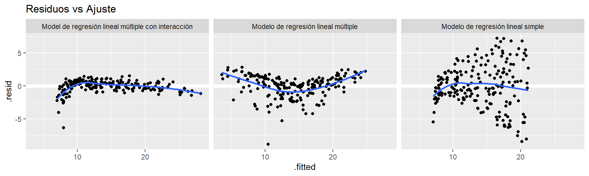
El modelo con interacción provee una varianza constante que los otros dos modelos, sin embargo, parecieran haber datos anómalos. Un manera alternativa de analizar visualmente la distribución de los residuos, es utilizando histogramas apropiadamente (en vez de QQ-plot):
ggplot(modelo_5_res, aes(.resid)) +
geom_histogram(binwidth = .25) +
facet_wrap(~ Model, scales = "free_x") +
ggtitle("Histograma de residuos")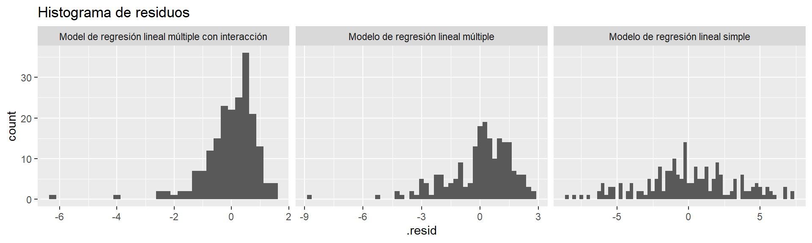
Es posible que si analizamos para distintas magnitudes de ventas veamos mayor grado de normalidad en los residuos, digamos que si ventas sales mayores a 10, obtenemos:
modelo_5_res %>%
filter(sales > 10) %>%
ggplot(aes(.resid)) +
geom_histogram(binwidth = .25) +
facet_wrap(~ Model, scales = "free_x") +
ggtitle("Histograma de residuos")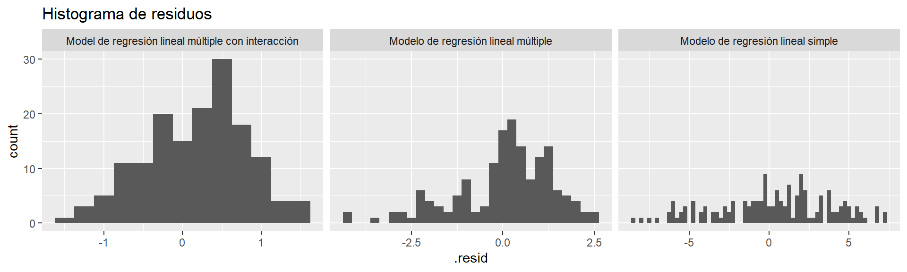
Es claro ver la normalidad en el modelo de regresión lineal con interacción es bastante viable. En cuanto a las observaciones anómalas, las diagnosticamos como:
par(mfrow=c(1, 2))
plot(modelo_5, which = 4, id.n = 5)
plot(modelo_5, which = 5, id.n = 5)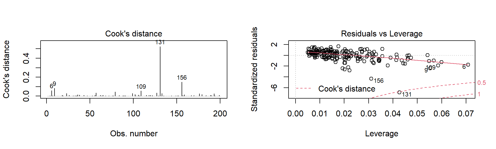
En el gráfico de la distancia de Cook, se ve claramente que las observaciones 6, 9, 109, 131 y 156 parecieran ser outliers. Por lo que vemos estas observaciones.
La coma final, ordena a R que nos entregue todas las columnas.
Advertising[c(6,9,109,131,156),]# A tibble: 5 x 4
TV radio newspaper sales
<dbl> <dbl> <dbl> <dbl>
1 8.7 48.9 75 7.2
2 8.6 2.1 1 4.8
3 13.1 0.4 25.6 5.3
4 0.7 39.6 8.7 1.6
5 4.1 11.6 5.7 3.2Notamos que en todas estas observaciones se tienen pocas ventas, lo que reafirma que nuestro modelo no se desempeña bien para niveles bajos de ventas.